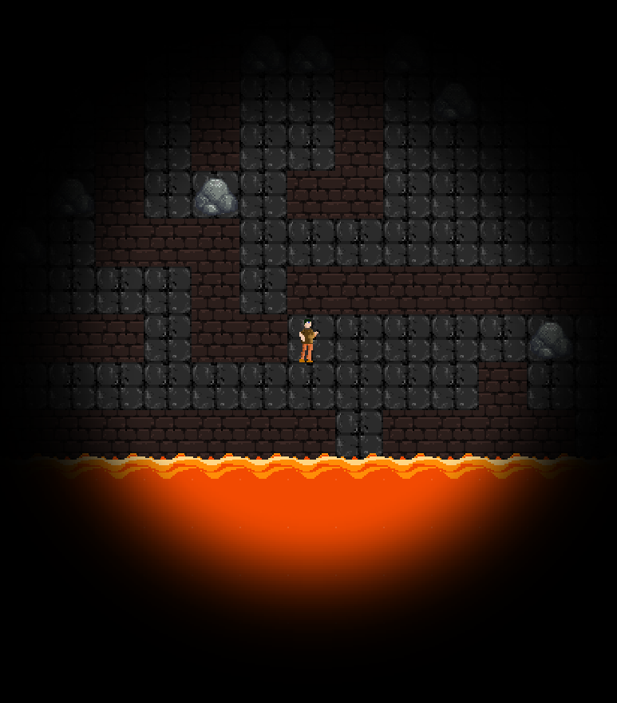

Teknisk beskrivelse
Top down 2d spill, der man beveger spilleren enten ved bruk WASD eller piltastene for å navigere et labyrint-lignende kart. Kartet har hindringer i form av steiner som kan dyttes, og en stadig stigende lava. Underveis er det mulig å plukke opp powerups (en hammer) som gjør det mulig å knuse vegger. Dersom lavaen treffer spilleren dør man, og får game over. Dersom man når toppen av kartet vinner man.
Prosjektet vårt er kodet i Java, og vi har tatt utgangspunkt i LibGDX frameworket. For prosjektorganisering og versjonskontroll har vi brukt GitLab som er basert på Git. Maven er brukt for testing (mockito, osv), kjøring og kompilering av prosjektet. IntelliJ er brukt for å sjekke test coverage, og generere klassediagram. Jeg brukte maven for å lage en jar fil som lastes ned på denne pagen.
For en mer utfyllende teknisk beskrivelse, se her.